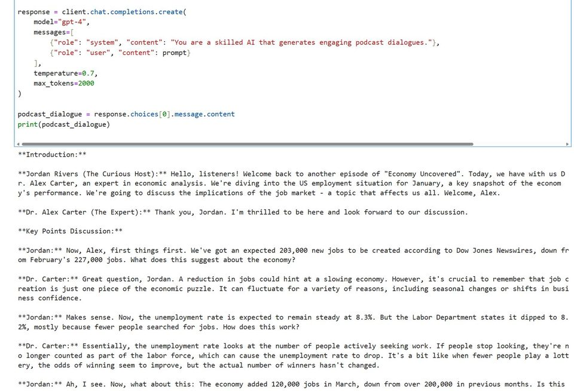
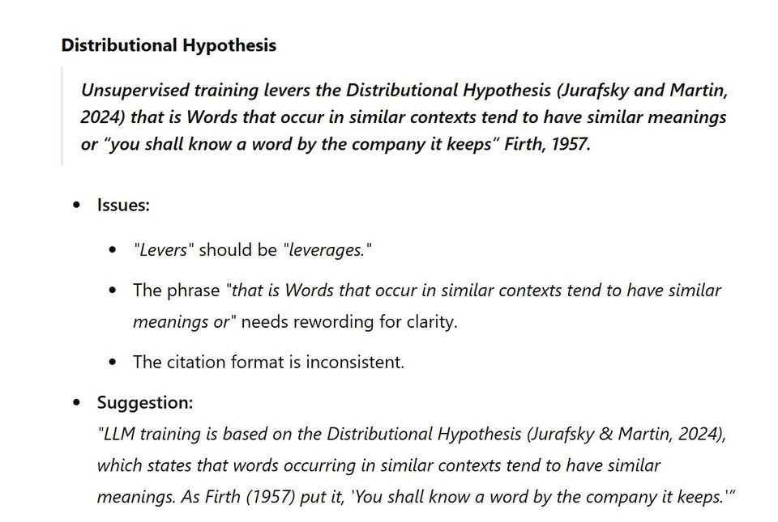
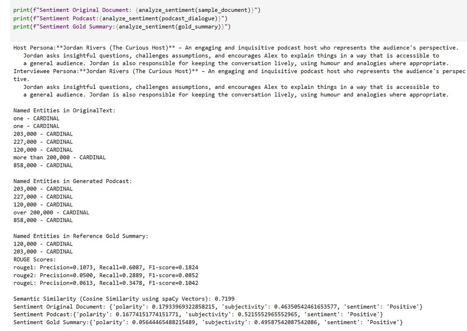

Proposal
Persona as a variable.
The research question treated host persona not as decoration, but as an experimental variable that might alter what information survives into the summary.
OCOM5204M / Data Mining and Text Analytics
My final research proposal asked how persona variation affects summarisation in LLM-generated podcast-style dialogue: whether changing the “hosts” changes meaning, emphasis, bias, distortion or engagement.
The module connected older NLP ideas with modern LLM behaviour: representation, text mining, summarisation, semantic drift, prompt sensitivity and the difficult line between making text engaging and changing what it means.

Proposal
The research question treated host persona not as decoration, but as an experimental variable that might alter what information survives into the summary.
Pilot
The pilot work looked at generated podcast outputs and scoring approaches for semantic distortion, information filtering and engagement.
Methods
The proposal drew on summarisation research, meeting-minutes literature, prompt engineering and evaluation design.
Lesson
The biggest practical lesson was that “make this more engaging” is not a neutral instruction. It can change what the user believes the source said.
Module scope
The module covered the practical pipeline of text analytics: collecting and preparing text, tokenisation, normalisation, n-grams, vector-space representations, word embeddings, text classification, clustering, information extraction, topic discovery, summarisation and ways of evaluating language systems.
It also connected those foundations to current NLP practice: transformer models, BERT-style contextual representations, large language models, prompt sensitivity, retrieval-augmented systems and the risks of using generated text as if it were a neutral compression of the source.

Pilot weirdness
One of the funniest pilot prompts asked for a council-meeting podcast in the style of Statler and Waldorf from the Muppets. The generated result was genuinely entertaining, but that was exactly the point: the same source material suddenly became a performance with judgement, ridicule and selective emphasis baked into the delivery.
That made the research question feel much less abstract. Persona choice is not just tone of voice; it can become an editorial layer.
“Another riveting council meeting to discuss!”
“I’m shaking with excitement... or maybe it’s the bad coffee.”
